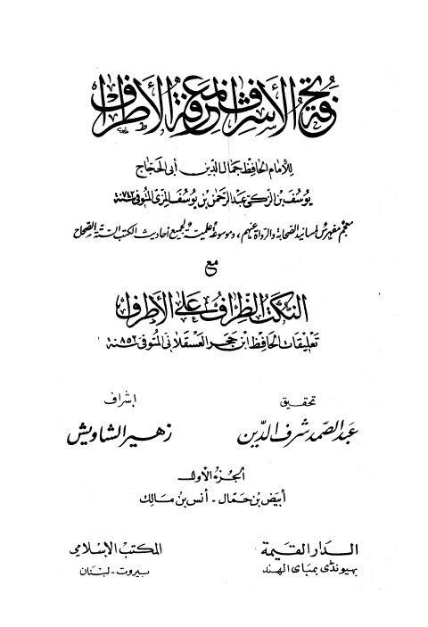

تحفة الأشراف بمعرفة الأطراف للحافظ يوسف بن عبد الرحمن المزي مع النكت الظراف على الأطراف تعليقات ابن حجر العسقلاني
Authors: أحمد بن علي بن حجر العسقلاني
Editors: زهير الشاويش ، عبد الصمد شرف الدين
Publishers: المكتب الإسلامي ، الدار القيمة
Download Downloads need an internet connection.
- Published
- 1403هـ 1983م
- Country
- بومباي، الهند • بيروت، لبنان
- Edition
- 2
- Volumes
- 14
- Pages
- 12755
- Type
- كتاب
- Category
- الحديث وعلومه
- Subcategory
- الأطراف
Description
**▫️ العنوان: تحفة الأشراف بمعرفة الأطراف للحافظ يوسف بن عبد الرحمن المزي مع النكت الظراف على الأطراف تعليقات ابن حجر العسقلاني** ▪️ المؤلف: #أحمد_بن_علي_بن_حجر_العسقلاني ▫️ المحقق: #عبد_الصمد_شرف_الدين • #زهير_الشاويش ▪️ الناشر: #المكتب_الإسلامي • #الدار_القيمة ▫️ تاريخ النشر: 1403هـ 1983م ▪️ بلد النشر: بومباي، #الهند • بيروت، #لبنان ▫️ الطبعة: 2 ▪️ عدد الأجزاء: 14 ▫️ الصفحات: 12755 ▪️ نوع الوعاء: #كتاب ▫️ التصنيف الرئيسي: #الحديث_وعلومه ▪️ التصنيف الفرعي: #الأطراف ۪